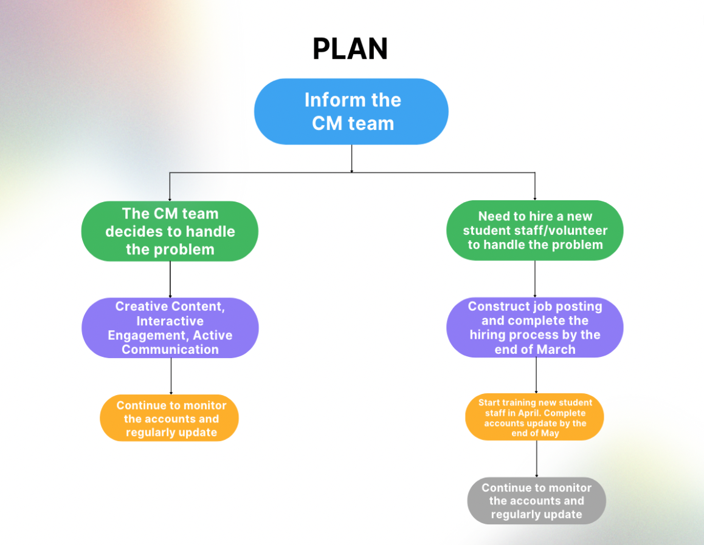
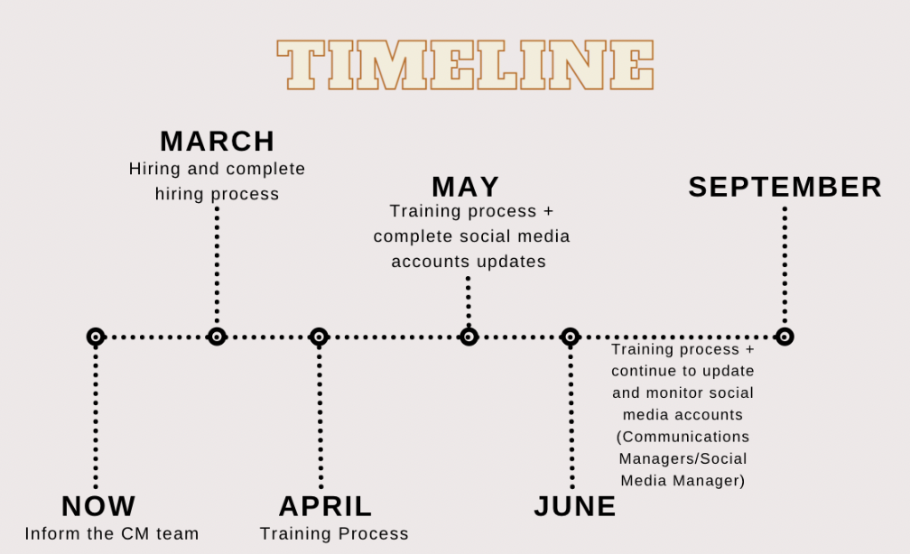

The Issue and Proposed Solutions
Summer Start’s official Instagram and Facebook accounts haven't been updated since September 2020, which is poor marketing, and may potentially lead to further problems including declining enrollment. The application for Summer Start 2023 will be opened soon so it’s urgent to take care of the outdated social media accounts as soon as possible to help with marketing. Solutions proposed for this problem are:
- Let Communications Managers be aware that the outdated social media accounts present a negative image of Summer Start and then take action accordingly.
- Recruit a new student staff/volunteer as a Social Media Manager to closely monitor Summer Start’s social media platforms, and make sure that they are updated regularly with creative content.
Outdated Social Media Accounts
On Summer Start’s official website, links to Summer Start’s Instagram and Facebook pages are provided for viewers for contact and viewing references. As a university elective academic and cultural program for incoming matriculated international students and immigrants, Summer Start uses social media to not only create digital presences but also provide platforms for viewers to get to learn more about the program. However, both of their latest updates were from 2020. Outdated posts don’t attract viewers, and may discourage them to contact the program through social media since it seems like the accounts have been abandoned. Summer Start may also lose its credibility due to its inactivity on these platforms. As the only two social media accounts that are linked on Summer Start’s website, viewers are highly likely to click on the icons and expect to see activity.
The pandemic changed the dynamics of social media usage since people spent most of their time on them. They serve as tools for communication, entertainment, promotion, and much more. Moreover, according to statistics, Facebook is ranked as the most popular global social media platform due to its large number of monthly active users while Instagram is ranked fourth. While listing these two digital platforms on Summer Start’s website, it’s rather important for Summer Start to follow the trends to maintain its positive digital presence through them. Thus, it's essential for the marketing team to create positive digital impressions through, for example, regularly posting updates about events, posting group photos from past years to showcase community and diversity, and using the stories feature to generate interactive connections with users.
Outdated accounts can present Summer Start negatively as unprofessional and unwelcoming. The branding of Summer Start may be badly tarnished, and could eventually put Summer Start in a weaker position compared to other global programs on campus if the issue continues. Summer Start should use Instagram and Facebook to actively promote the program and engage its viewers. Doing so will help Summer Start to re-establish an effective public image, and gain more viewers on its pages. Creative content, interactive design, and active engagement of Summer Start’s Instagram and Facebook accounts will help attract more prospective participants.
Using Instagram and Facebook for Effective Marketing
A detailed plan follows:
Personnel: Inform Alex, the CM Lead, of the problem first. The CM team can develop a separate plan or refer to the following suggestions regarding solving the issue. If a new student staff/volunteer is necessary, you would need to work with the CM team to decide job responsibilities, pay rate, dates, and so on, and send a recruiting email to former Summer Start participants from the past 3 years to recruit a new team member before the end of March to start preparing for Summer Start 2023.
Goals: Effective social media marketing is achieved by having approachable and detailed goals. Summer Start’s focus through social media platforms is to present the program positively, demonstrate its values through content, and hopefully improve enrollments.
Content: The accounts’ main target audience is incoming international students and parents. One of the ways that CM can study and analyze social media accounts’ audiences is through Instagram’s analytics feature for business accounts, and through Facebook’s Page Insights. Developing specific and compelling content will highly assist in effective marketing for Summer Start. Since the accounts are also Summer Start’s online profiles, demonstrating the program’s values of diversity, growth, and opportunity can be achieved by posting relevant images such as group photos of past participants and snapshots of activities. Application for Summer Start 2023 will be opened soon, the accounts’ newest post can be an announcement of the launch of Summer Start 2023.
Platform: Instagram and Facebook also serve as digital platforms where Summer Start provides resources and support to its viewers. The person managing the account should closely monitor the interactive features to engage audiences through posts, direct messages, comments, tags, and stories. Answering questions and concerns in direct messages and comments, properly reacting to posts or stories that tagged Summer Start, and posting interactive stories will help Summer Start to establish professional and welcoming online impressions while building connections with its students. What’s most important is to keep the accounts updated regularly to showcase Summer Start’s enthusiasm and credibility.
Time and Expense
Cost: No extra cost will be incurred if a student volunteer is hired or if the CM team handles the problem. If a new student staff is hired to be the Social Media Manager, who will be working with the CM team, extra cost will be dedicated to the new team member’s wage. Since responsibilities for Social Media Manager aren’t as extensive as a CM, the student staff will most likely be working fewer hours from March to September at about 3-5 hours per week. Therefore, the cost for the second solution varies depending on the specific amount of hours the Social Media Manager puts in.
Timeline: This issue should be notified to Alex as soon as possible therefore further actions can be taken. If a new student staff or volunteer is necessary, the hiring process should be finished by the end of March so that the new team member can start the training process, and possibly begin taking over the social media accounts. By the end of May, the account should be completely updated and brought back to life. While the span of the plan will range from March to mid-September, the accounts should be highly active during this recruiting period as well as during the ongoing of this year’s program. Since most of the team members are student staff, Alex may need to be responsible for monitoring the accounts during off-season.
What Does It Bring to Summer Start
There has been a decline in student enrollment in Summer Start since 2018. The reasons behind the decrease in the numbers are varied with the pandemic being one of the major ones. Now that the pandemic has passed, Summer Start should strive to increase enrollment this year, and update the program’s Instagram and Facebook accounts soon is essential as the application for Summer Start 2023 will be opened soon.